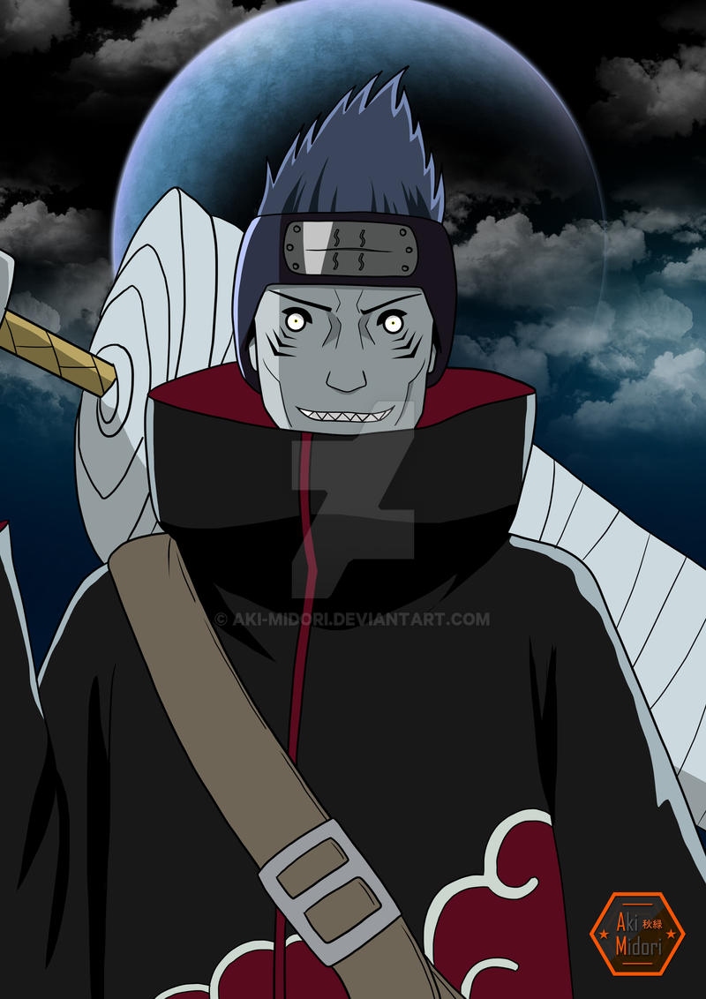

KISAME
Originally, Kisame was to guard the Cypher Division under orders from his superior, Fuguki Suikazan of the Seven Ninja Swordsmen of the Mist. When the group was cornered by Konoha-nin under Ibiki Morino during a mission, Kisame chose to kill the Cypher Division members to keep their intel from being leaked out through Ibiki's interrogation, as instructed by Fuguki. Know more |
|